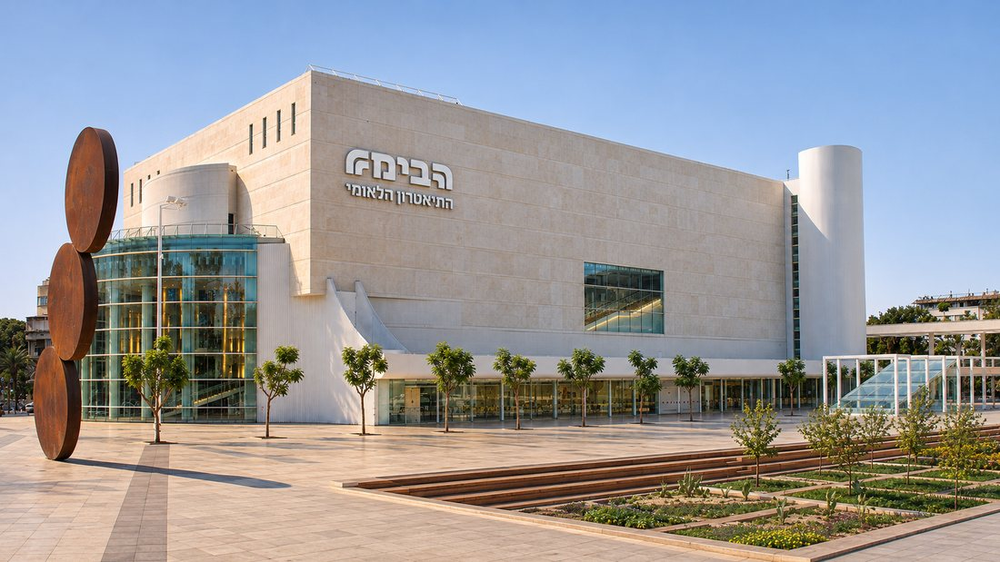
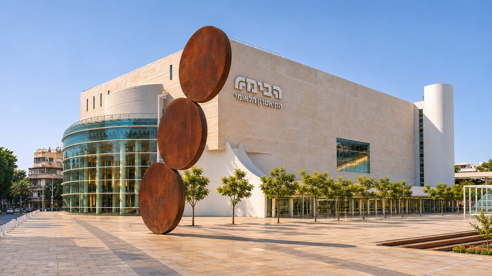
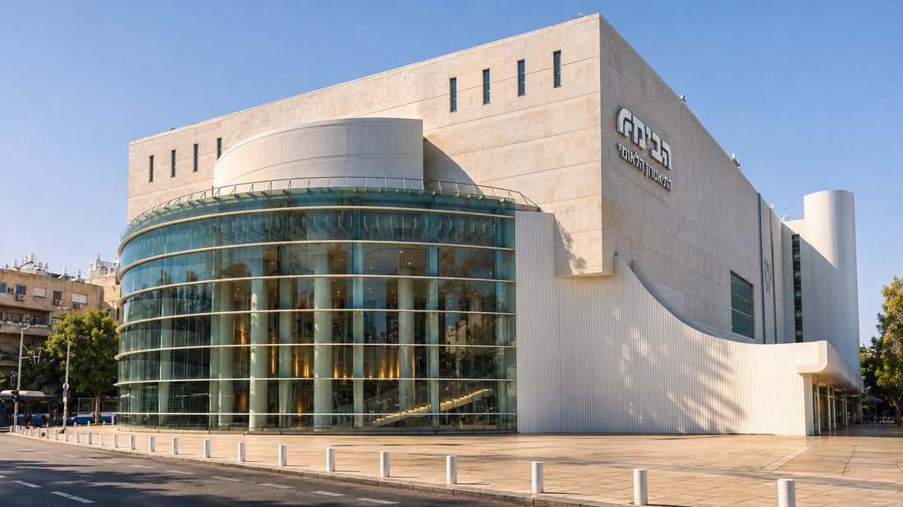
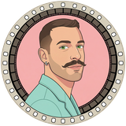
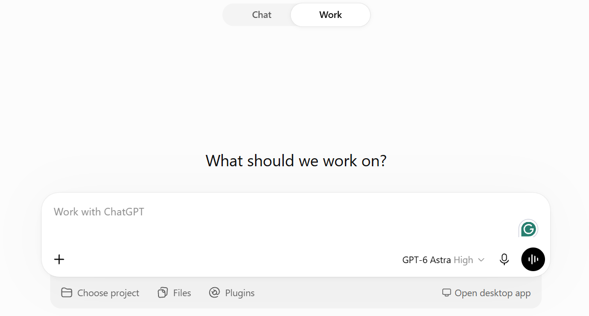
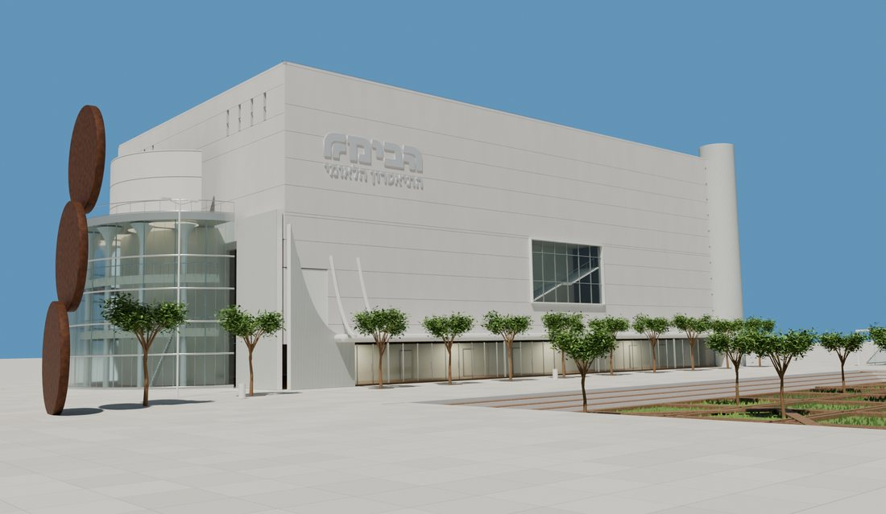

01
אוספים תמונות
תמונה רחבה שרואים בה את כל המבנה, זווית מהצד, ותמונות של מה שחשוב לשמור: לוגו, כניסה, חלונות.
המצלמה תגיע לצד השני של הבניין? צרפו גם תמונה משם. ככה המודל מבין את הצורה ואת העומק.




Yuvi.AIאת השוט מהריל לא צילם רחפן. הוא התחיל בתמונה של הבימה.
ככה עושים את זה, שלב אחרי שלב, עם הפרומפט שהשתמשתי בו.
גררו את הקו: מצד אחד המודל מבלנדר, מהצד השני התוצאה. אותה תנועה בדיוק.
עם מה יוצאים
של הבניין שבחרתם, מהתמונות שלכם.
שוט רחפן עם תנועת המצלמה שאתם תכננתם.
באותה תנועה בדיוק, כאילו צילמתם אותו.
מה צריך
אחת רחבה שרואים בה את כולו, ועוד כמה זוויות ופרטים.
החל מ-25 דולר, עם המודל GPT-6 Astra.
Seedance 2.5 נותן את התוצאה הכי טובה. Kling 4 עובד גם הוא, והוא זול יותר.
שלב אחרי שלב
תמונה רחבה שרואים בה את כל המבנה, זווית מהצד, ותמונות של מה שחשוב לשמור: לוגו, כניסה, חלונות.
המצלמה תגיע לצד השני של הבניין? צרפו גם תמונה משם. ככה המודל מבין את הצורה ואת העומק.



לפני שכותבים, מסדרים שלושה דברים ב-ChatGPT:

1 2 3מעלים את התמונות וכותבים:
זהו. לא צריך להגיד לו "בלנדר". הוא יודע לבד.

עכשיו אומרים לו איך הרחפן טס.
לא לשכוח את היחס. תכתבו לו באיזה יחס אתם רוצים את הסרטון:
צפו בסרטון שקיבלתם ובדקו שלושה דברים:
משהו לא יושב? תגידו לו מה לתקן, ותקבלו סרטון חדש.
כשהסרטון מבלנדר מוכן, מבקשים ממנו:
חשוב להגיד לו לאיזה מחולל הוא כותב:
אפשר גם לקחת את הפרומפט שלי ולשכתב אותו לבניין שלכם.
Create a photorealistic 6.5-second drone shot of Habima National Theatre in Tel Aviv, in horizontal 16:9. Follow the uploaded Blender video for the camera path, timing, and final framing. Use the three reference photographs for the architecture, materials, and consistent late-afternoon lighting. Begin high on the side of the cylindrical tower, looking across the plaza. Fly a smooth exterior arc of approximately 170 degrees along the long limestone façade. Let the three rusted steel discs sweep across the foreground with natural parallax. Continue around the curved blue-green glass lobby until the north façade comes into view. Ease to a complete stop and hold that angle steady for the final half-second. Keep the camera outside throughout. Use a fixed focal length, a level horizon, gradual acceleration and braking, and natural motion blur. Keep the building's proportions, stone cladding, window frames, and sculpture stable throughout the shot. Maintain steady exposure and let the glass reflections shift naturally with the camera. Keep the plaza clear of temporary barriers and the adjoining street empty of vehicles. One uninterrupted shot.
נכנסים ל-Seedance 2.5 (או ל-Kling 4) ומעלים, לפי הסדר:
בוחרים אותו אורך ואותו יחס של הסרטון מבלנדר, ומייצרים.
בקיצור
אני בונה סדנה שמלמדת ליצור תמונות וסרטונים עם AI, מהרעיון ועד התוצאה.
רוצים לשמוע עליה ראשונים? השאירו פרטים, ואעדכן אתכם כשהיא נפתחת.